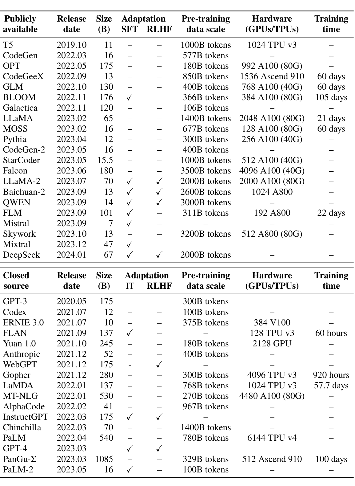
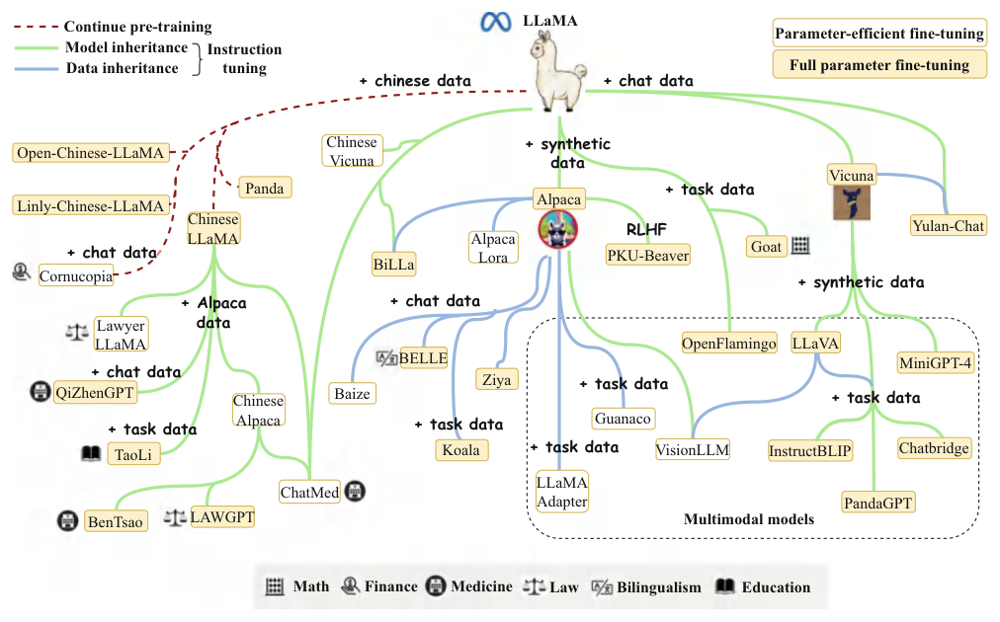
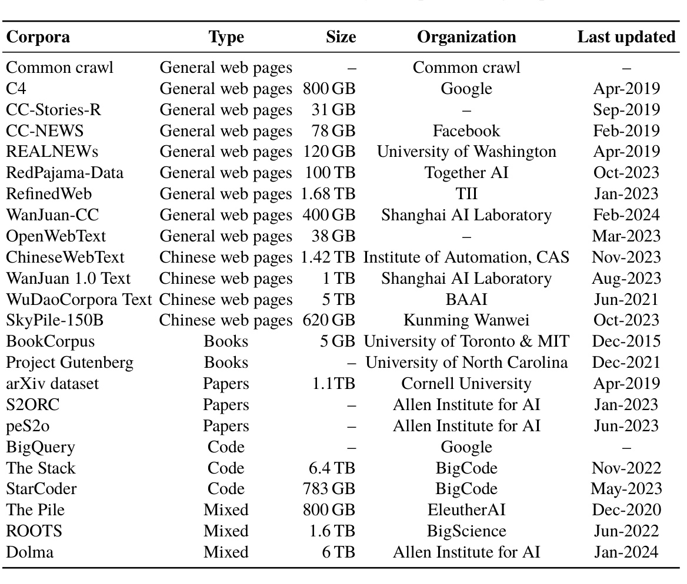
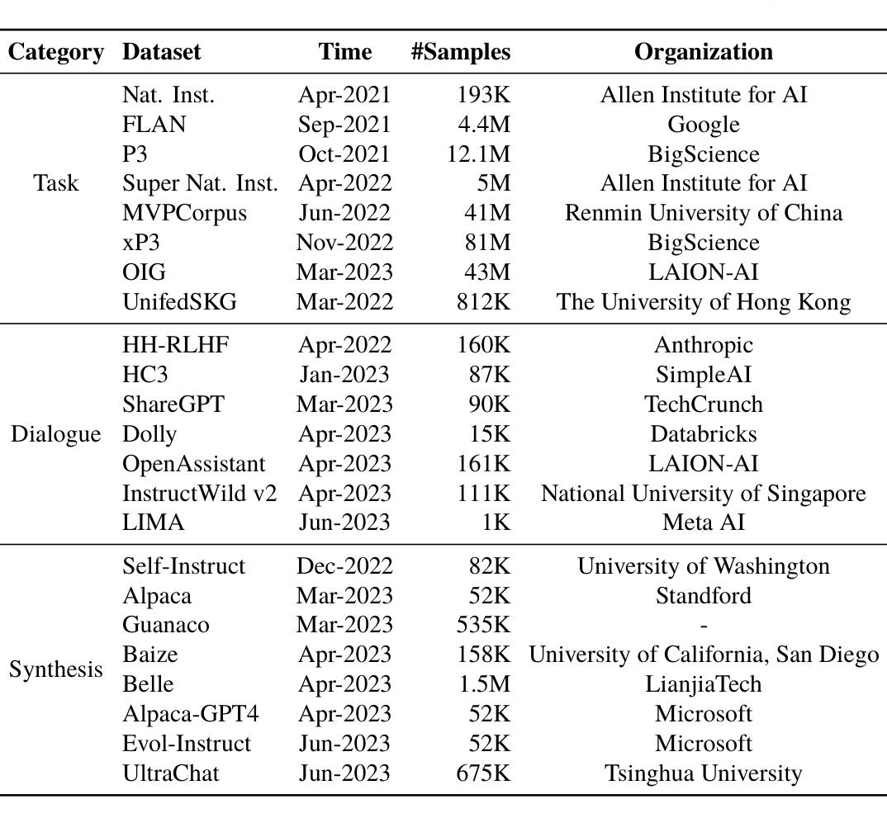
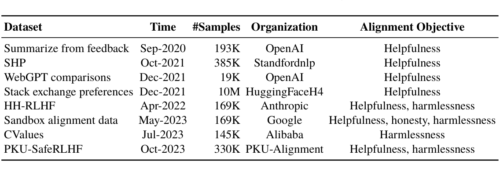

Chapter 3Language Model Resources
Abstract The development or replication of large language models (LLMs) faces numerous obstacles, such as insufficient computational resources, unavailability of necessary data, and technical limitations. To facilitate ongoing advancements in LLM research, a number of researchers are striving to increase collaboration and promote the open exchange of data and models.
This chapter aims to provide a comprehensive overview of existing resources for developing language models. We begin by introducing publicly available model checkpoints, organized by company series. By reviewing the detailed configurations of these LLMs, we trace their development progress and guide users in selecting suitable model checkpoints for both practical use and further training. Next, we introduce available training datasets, categorizing them into pre-training and post-training datasets. For pre-training, we extensively discuss data sources such as web pages, books, code, and integrated datasets. For post-training, we classify existing datasets into two main categories: instruction tuning datasets and alignment datasets. Based on this foundation, readers can better understand the types of data required for training and their influence on model performance. Furthermore, we introduce commonly used libraries for developing LLMs and discuss their features in facilitating the training process. Finally, we present the supporting resources for this book, provided by our author team.
Developing or reproducing large language models (LLMs) poses significant challenges due to factors such as limited computing resources, data unavailability, and technical constraints. To foster continuous progress in LLM-related techniques, many researchers are committed to advancing the sharing and openness of data and models.
This chapter provides an overview of publicly available resources for developing LLMs, including model checkpoints (Sect. 3.1), pre-training data (Sect. 3.2), post-training data (Sect. 3.3), and code libraries (Sect. 3.4).
3.1Publicly Available Model Checkpoints#
Pre-training language models is widely recognized as a computationally intensive task. As a result, publicly available pre-trained model checkpoints are crucial for advancing LLM technology. Thanks to the collaborative efforts of academia and industry, the open-source community has gathered a substantial collection of these resources. Users can choose and download model checkpoints according to their specific research or development needs. This section will introduce these publicly available model checkpoints.
3.1.1Publicly Available General LLM Checkpoints#
In this subsection, we will briefly introduce some representative LLMs,1 focusing on key factors such as parameter scale, data resources, computational requirements, training technologies, and overall performance on downstream tasks. A more detailed summary of these models can be found in Table 3.1.
LLaMA
LLaMA [46] is the first-generation LLM released by Meta AI in February 2023, available in four versions with 7B, 13B, 33B, and 65B parameters. All versions of LLaMA were trained on over 1T tokens. The 65B parameter version, in particular, was trained for nearly 21 days using 2048 A100 GPUs, each with 80 GB of memory. With its model checkpoints publicly available from an early stage of LLM research, LLaMA has become one of the most popular open-source LLMs and continues to be widely used today. It serves as a foundational model for many research projects focused on fine-tuning or continual pre-training, leading to the development of numerous model variants (see Sect. 3.1.2). This has significantly advanced research in the field of LLMs.
1Given the rapid development of LLMs, it is impractical to include all or even most of the state-of-the-art models and the latest data resources. Therefore, in addition to presenting the available resources, we also view this as an opportunity to review the past progress in LLM development.
In July 2023, Meta AI publicly released LLaMA-2 [47], a comprehensive upgrade of its first-generation model. This release includes four versions of 7B, 13B, 34B (not open-source), and 70B parameters. Compared to its predecessor, LLaMA-2 expands the scale of pre-training data to 2T tokens, increases the model’s context length to 4096 tokens, and introduces efficient attention mechanism such as grouped query attention (see Sect. 5.2.5) to enhance model performance. Additionally, Meta AI uses LLaMA-2 as a base model and further optimizes it through supervised fine-tuning, reinforcement learning from human feedback (RLHF), and other techniques, following a comprehensive post-training process. Meta has also released LLaMA-2 Chat, a variant designed for dialogue settings, also available in four parameter sizes. LLaMA-2 Chat demonstrates strong performance across a range of evaluation tasks, including code generation, knowledge question answering, reading comprehension, and mathematical reasoning, while also offering enhanced safety for real-world applications.
In April 2024, Meta AI released LLaMA-3, which currently offers two versions with 8B and 70B parameters, both available to the public. The vocabulary size of LLaMA-3 has been expanded to 128K, and the pre-training data has reached 15T tokens. After pre-training, LLaMA-3 underwent additional stages such as supervised fine-tuning, rejection sampling, proximal strategy optimization, and direct preference optimization, all of which contributed to its alignment with human preferences. Compared to LLaMA-2, LLaMA-3 boasts a roughly threefold increase in training efficiency, with over 95% of the total training time being effectively utilized. Notable improvements have been made in areas such as reasoning, code generation, instruction following, and more. Furthermore, LLaMA-3 integrates a more efficient tokenizer and the grouped query attention mechanism. Despite having more parameters, the inference efficiency of its 8B version is comparable to that of the 7B version of LLaMA-2.
MOSS
MOSS is a pioneered open-sourced bilingual LLM with 16B parameters, released on Feb 20, 2023 [48]. Its development follows three main stages: cross-lingual pre-training, supervised fine-tuning, and preference-aware training. At the first stage, MOSS is pre-trained on 677B tokens from English, Chinese, and code corpus. During fine-tuning, MOSS is initially trained on 1.2M synthesized multi-turn conversations to become
a helpful, honest, and harmless assistant. Using 100K collected user prompts, 1.1M additional multi-turn conversations are generated, with a distribution well-aligned with real-world user intents. Following this, a preference dataset consisting of 100K prompts is constructed in an off-policy manner, which is used for preference-aware training. In subsequent releases, MOSS is augmented with external tools, including search engine, calculator, equation solver, and image-to-text generator, further enhancing its versatility and utility.
ChatGLM
ChatGLM [49, 50] is a bilingual chat model developed jointly by Zhipu AI and Tsinghua University. First released in March 2023, it has since undergone iterative improvements. The model is now in its third generation, ChatGLM-3, with a parameter scale of 6B. ChatGLM is known for its excellent language capabilities and low deployment cost, excelling in evaluations across a wide range of tasks, including semantics, mathematics, reasoning, and code generation. Additionally, the ChatGLM-3 series has open-sourced the base model ChatGLM3-6B-Base as well as the long-context chat models ChatGLM3-6B-32K and ChatGLM3-6B-128K. Beyond the ChatGLM series, Zhipu AI has also released the high-performing GLM-4 base model.
Falcon
Falcon [51] is a series of language models released by the Technology Innovation Institute (TII) in Abu Dhabi, United Arab Emirates. This series includes three parameter versions: 7B, 40B, and 180B. The two smaller versions were released in May 2023, while the 180B parameter version was released in September 2023. Among them, the 180B parameter version was the largest open-source pre-trained language model at the time. Over 80% of the training data for Falcon comes from the RefinedWeb dataset, a rigorously cleaned web page dataset based on Common Crawl. In terms of the used computational resources during training, the 7B model consumed 1.5T tokens and was trained on 384 NVIDIA A100 GPUs. The 40B model consumed 1T tokens on the same number of GPUs, whereas the 180B model consumed 3.5T tokens and was trained on 4096 A100 GPUs. Building upon this base model, TII also introduced the Falcon Instruct model, which has been specifically fine-tuned with user instructions to enhance usability.
YuLan
YuLan-Chat [52] is a Chinese-English bilingual chat model developed by Renmin University of China. The first version was released in June 2023, and it has since been updated to the latest version, YuLan-Chat-3. YuLan-Chat-1 was fine-tuned based on LLaMA, using carefully optimized, high-quality Chinese-English mixed instructions, and is available in two parameter scales: 13B and 65B. YuLan-Chat-2, built upon LLaMA-2, was continually pre-trained using a bilingual Chinese-English dataset. It also has two versions (13B and 65B) and supports a context length of 8K. YuLan-Chat-3 was trained from scratch with a complete pre-training process, including a two-stage supervised fine-tuning (SFT) method based on curriculum learning, and underwent human alignment. It has a parameter scale of 12B and was pre-trained on 1.68T tokens. The specific training process is detailed in Sect. 4.4.3.
In December 2024, YuLan-Mini [53], a lightweight language model with 2.4B parameters, was publicly released. Despite being trained on only 1.08T tokens, it achieves top-tier performance among models of a similar parameter scale. The development of this model involved three major technical contributions: a meticulously designed data pipeline of effective data curriculum and mix, a robust optimization method to enhance training stability, and an effective annealing technique that significantly boosts performance. Notably, the full details of the data composition for each training phase are fully disclosed.
Baichuan
Baichuan [54] is an open-source LLM released by Baichuan AI in June 2023. The model has a parameter scale of 7B, supporting both Chinese and English and has been pre-trained on a dataset of 1.2T tokens. In September 2023, Baichuan AI launched a new generation of open-source multilingual models, Baichuan-2 [55]. This model is available in two versions: 7B and 13B, both pre-trained on a larger dataset of 2.6T tokens. In addition to the base models, Baichuan AI also offers chat models that have been supervised fine-tuned and aligned with human preferences. According to the technical report for Baichuan-2, its performance has significantly improved, surpassing the first-generation Baichuan model across all benchmarks. Baichuan-2 also demonstrates strong multilingual capabilities and shows great potential for domain-specific applications, such
as in law and medicine. In January and May 2024, Baichuan-3 and Baichuan-4 were released, respectively. Baichuan-3, with over 100 billion parameters, surpasses GPT-4 on Chinese evaluation benchmarks. Baichuan-4, available in two versions, Turbo and Air, offers improved performance across all capabilities.
InternLM
InternLM [56] is a multilingual, open-source LLM developed by the Shanghai Artificial Intelligence Laboratory and publicly released in July 2023. It currently offers two open-source versions with parameter scales of 7B and 20B. According to the technical report, the 20B version of InternLM performs on par with LLaMA-70B in various benchmarks. Additionally, the model is equipped with tool use capabilities and supports extensive plugins. In addition to model checkpoints, InternLM offers a comprehensive suite of open-source tools, including the pre-training framework InternLM-Train, the cost-effective fine-tuning framework XTuner, the deployment inference framework LMDeploy, the evaluation framework OpenCompass, and the agent development framework Lagent. These tools provide end-to-end support for training and deploying large models.
In January 2024, InternLM-2 was officially released, showcasing significant improvements over its predecessor in various dimensions such as reasoning, coding, mathematics, dialog, and instruction following. InternLM-2 is available in three parameter scales: 1.8B, 7B, and 20B. Furthermore, the InternLM series has expanded to include the multimodal model InternLM-XComposer and the specialized mathematical model InternLM-Math. Qwen
Qwen [57] is a series of multilingual LLMs developed by Alibaba, initially released in August 2023. This series includes multiple versions with parameter scales ranging from 0.5B to 72B, and it continues to receive updates. According to the technical report, Qwen-1.5 (72B), released in February 2024, outperforms LLaMA-2 (70B) on several benchmarks, demonstrating improved capabilities in language understanding, reasoning, and mathematics. The Qwen series also includes specialized models tailored for specific tasks, such as Qwen-Code for code generation, Qwen-Math for mathematical tasks, and Qwen-VL for multimodal tasks. These models allow users to select the best option based on their specific requirements.
In June 2024, the Qwen team launched the Qwen-2 series, which offers significantly improved overall performance compared to the previous generation. In September 2024, Qwen-2.5 series, with specialized models for coding (Qwen2.5-Coder) and mathematics (Qwen2.5-Math) are publicly released. Qwen-2.5 series include the LLM with various sizes from 0.5B to 72B, which are all pre-trained on 18T tokens. The Qwen-2.5 series delivers highly competitive performance across various benchmarks, garnering significant attention in downstream applications.
Mistral and Mixtral
Mistral [58] is a 7B-parameter LLM released publicly by Mistral AI in September 2023, quickly attracting significant attention. According to results reported in the Mistral blog, Mistral (7B) outperforms both LLaMA-2 (13B) and LLaMA (34B) on various evaluation benchmarks. Its performance in code generation is comparable to that of Code LLaMA (7B), a model specifically fine-tuned for coding tasks. In terms of decoding efficiency, Mistral incorporates grouped query attention mechanism (see details in Sect. 5.2.5). For extending the context length, it utilizes sliding window attention technology (see details in Sect. 5.2.5), which significantly enhances its ability to process long texts. These improvements allow Mistral to double the inference speed for sequences up to 16K tokens, with an attention window size of 4K. Additionally, Mistral AI has released a supervised fine-tuned version Mistral Instruct, which achieves improved performance on MT-bench [59], a benchmark designed to assess LLM capabilities in multi-turn conversation and instruction following.
Mixtral, fully known as Mixtral 8×.7B, is an LLM based on the sparse mixture of experts (MoE) architecture, publicly released by Mistral AI in December 2023. The model consists of eight groups of expert parameters, and for each token, Mixtral uses a routing network at each layer to select two groups of experts, whose outputs are then combined. Although Mixtral has a total of 46.7B parameters, only 12.9B parameters are active for each token processed. As a result, Mixtral’s processing speed and resource consumption are comparable to those of a 12.9B model. According to the Mistral AI blog, Mixtral outperforms both LLaMA-2 (70B) and GPT-3.5 across various benchmarks. Additionally, its decoding speed is six times faster than that of LLaMA-2 (70B), and it supports context lengths of up to 32K tokens. Mixtral supports multiple languages, including English,
French, Italian, German, and Spanish, among others. Furthermore, Mistral AI has also released a supervised fine-tuned version, Mixtral 8×.7B Instruct, which performs similarly to GPT-3.5 on the MT-bench [59].
DeepSeek-LLM
DeepSeek-LLM [60] was publicly released by DeepSeek AI in November 2023 and primarily supports Chinese and English. It is available in two versions, with 7B and 67B parameters, and the pre-training stage utilizes 2T tokens of data. According to the technical report of DeepSeek-LLM, the 67B DeepSeek-LLM has surpassed LLaMA- 2 (70B) in the evaluated benchmarks, especially in code, mathematics, and reasoning tasks. DeepSeek-LLM also provides the chat models of 7B and 67B parameter scales and has aligned with human preference. In addition to the general language model, the DeepSeek series also released the corresponding mathematical model DeepSeek-Math, code model DeepSeek-Coder, and multimodal model DeepSeek-VL.
Furthermore, MoE-based models DeepSeek-V2, V2.5, and V3 have been released in succession, each showing progressively stronger performance. The latest model, DeepSeek-V3, features a total of 671B parameters, with 37B activated for each token, and highlights an efficient pre-training process. DeepSeek-V3 introduces a series of innovative techniques to enhance the training of MoE models, including an auxiliary-loss-free strategy for load balancing and a multi-token prediction training objective to improve performance. Additionally, it details training techniques that enable efficient inference and cost-effective training.
In January 2025, DeepSeek-R1-Zero and DeepSeek-R1 were officially released, featuring slow-thinking capabilities. Both models were trained using scaled reinforcement learning based on the DeepSeek-V3 base model. Notably, DeepSeek-R1-Zero achieved performance comparable to that of o1 by inherently enhancing the complex reasoning capabilities of language models. DeepSeek has made the model checkpoints available, accompanied by comprehensive technical reports. Additionally, they offer several enhanced open models by distilling the powerful DeepSeek-R1 model.
Gemma
Gemma [61] is a lightweight, open-source LLM released by Google in February 2024, available in two parameter scales: 2B and 7B. Its technical architecture is similar to Google’s proprietary multimodal LLM, Gemini [62], but Gemma is a pure language model focused on English-language tasks. The pre-training dataset for Gemma (2B) consists of 2T tokens, while Gemma (7B) was trained on a dataset of 6T tokens, with both datasets predominantly sourced from English-language content. According to the technical report, Gemma has demonstrated strong performance across a variety of natural language processing benchmarks. In addition, Gemma offers a supervised fine-tuned version, known as Gemma-IT, which has been aligned with human preferences to improve its applicability and effectiveness in practical scenarios.
In June 2024, the Gemma-2 series was released, featuring language models ranging from 2B to 27B parameters. The 27B model was trained on 13T tokens, while the 2B model was trained on 2T tokens.
MiniCPM
MiniCPM [63] is an open-source language model developed jointly by Modelbest Inc. and Tsinghua University, with a parameter scale of 2.4B (non-embedding parameters), released in February 2024. Prior to its training phase, MiniCPM team has conducted extensive sandbox experiments using smaller models for optimizing training configurations, which are then applied to the training of larger models. MiniCPM follows a three-stage training process, beginning with a warm-up phase, followed by stable training and annealing. It is then further refined through supervised fine-tuning and human alignment. According to its technical report, MiniCPM has demonstrated outstanding performance across multiple benchmarks. The model series also includes versions such as MiniCPM-2B-SFT (instruction fine-tuned), MiniCPM-2B-DPO (DPO-aligned), and MiniCPM-V (multimodal version), among others. MiniCPM-4B is the third generation in the MiniCPM series. It achieves performance comparable to several LLMs in the 7B–9B range. Additionally, MiniCPM-4B features a 32k context window and, theoretically, can handle an infinite context.

Release
Size
Adaptation
Pre-training
Hardware
Training
date
(B)
SFT RLHF
data scale
(GPUs/TPUs)
time
2019.10
11
1000B tokens
1024 TPU v3
–
–
–
2022.03
16
577B tokens
–
–
–
–
2022.05
175
180B tokens
992 A100 (80G)
–
–
–
2022.09
13
850B tokens
1536 Ascend 910
60 days
–
–
2022.10
130
400B tokens
768 A100 (40G)
60 days
–
–
2022.11
366B tokens
384 A100 (80G)
105 days
176
–
.
2022.11
120
106B tokens
–
–
–
–
2023.02
65
1400B tokens
2048 A100 (80G)
21 days
–
–
2023.02
16
677B tokens
128 A100 (80G)
60 days
–
–
2023.04
12
300B tokens
256 A100 (40G)
–
–
–
2023.05
16
400B tokens
–
–
–
–
2023.05
15.5
1000B tokens
512 A100 (40G)
–
–
–
2023.06
180
3500B tokens
4096 A100 (40G)
–
–
–
2023.07
2000B tokens
2000 A100 (80G)
–
70
.
.
2023.09
2600B tokens
1024 A800
–
13
.
.
2023.09
3000B tokens
–
14
–
.
.
2023.09
311B tokens
192 A800
22 days
101
–
.
–
2023.09
7
–
–
–
.
2023.10
13
3200B tokens
512 A800 (80G)
–
–
–
2023.12
–
47
–
–
–
.
2024.01
2000B tokens
–
67
–
.
.
Release
Size
Adaptation
Pre-training
Hardware
Training
date
(B)
IT
RLHF
data scale
(GPUs/TPUs)
time
2020.05
175
300B tokens
–
–
–
–
2021.07
12
100B tokens
–
–
–
–
2021.07
10
375B tokens
384 V100
–
–
–
2021.09
128 TPU v3
60 hours
137
–
–
.
2021.10
245
180B tokens
2128 GPU
–
–
–
2021.12
52
400B tokens
–
–
–
–
2021.12
–
175
-
–
–
.
2021.12
280
300B tokens
4096 TPU v3
920 hours
–
–
2022.01
137
768B tokens
1024 TPU v3
57.7 days
–
–
2022.01
530
270B tokens
4480 A100 (80G)
–
–
–
2022.02
41
967B tokens
–
–
–
–
–
175
–
–
.
.
2022.03
70
1400B tokens
–
–
–
–
2022.04
540
780B tokens
6144 TPU v4
–
–
–
–
2023.03
–
–
–
.
.
2023.03 1085
329B tokens
512 Ascend 910
100 days
–
–
2023.05
100B tokens
16
–
–
–
.
3.1.2Fine-Tuned Variants Based on LLaMA Models#
Since its release in February 2023, the LLaMA models have garnered widespread attention in both academic and industrial communities, making significant contributions to the open-source development of LLM technology. Thanks to its impressive performance and the public release of its model weights, LLaMA quickly became one of the most popular open-source LLMs upon launch. Many researchers have expanded LLaMA’s functionality and application scope using various training techniques. Among these, instruction tuning stands out as particularly cost-effective in terms of computational resources, making it the preferred method for developing customized or specialized models. This approach has resulted in the creation of a diverse range of LLaMA model variants. Next, we introduce the various LLaMA variants, categorized according to the types of instructions used in supervised fine-tuning (SFT).
- Basic instructions. Among the extended models of LLaMA, Stanford Alpaca [33] is the first open-source instruction-following model fine-tuned based on LLaMA (7B). Using the Self-Instruct method [64]—which generates instructions automatically with the help of LLMs—Stanford Alpaca produced 52K instruction examples (Alpaca-52K) for training. The instruction data and training code developed for Stanford Alpaca have been widely adopted in subsequent research work. Another popular variant of LLaMA, Vicuna [65], takes a different approach, not relying on synthetic instruction data. Instead, it primarily utilizes user conversation data collected by ShareGPT for training.
- Chinese instructions. LLaMA has been primarily trained on English text data, which limits its performance on Chinese tasks. To improve the model’s ability to handle Chinese, researchers typically expand the original vocabulary, continue pre-training with Chinese text datasets, and fine-tune the model using Chinese instruction data. Training with Chinese data not only enhances the model’s performance on Chinese-specific tasks but also improves its capabilities in cross-linguistic tasks. Several LLMs have already been fine-tuned with Chinese instructions, including Chinese-LLaMA, Open-Chinese- LLaMA, Chinese Alpaca, and YuLan-Chat-1, among others.
- Domains-specific instructions. Although LLaMA demonstrates strong general base model capabilities, its performance in specialized domains (e.g., medicine, education, law, mathematics) remains somewhat limited. To enhance LLaMA’s capabilities in these specific fields, researchers often leverage domain-specific instruction data. Additionally, they may utilize APIs from proprietary models like GPT-3.5 or GPT-4 to generate multi-turn dialogue data. This domain-specific instruction data is then used to fine-tune LLaMA, improving its performance in targeted fields. Typical domain-specific LLaMA models include BenTsao (medical), LAWGPT (law), and TaoLi (education).
- Multimodal instructions. Due to the excellent language capabilities of LLaMA, a series of subsequent multimodal LLMs have adopted it (or its derivative models) as the base language model. These models incorporate a visual encoder and utilize multimodal instructions to align visual and language semantic spaces. Compared to other language models, Vicuna has garnered more attention in the early development of multimodal LLMs, resulting in a series of multimodal model variants, including LLaVA, MiniGPT-4, and InstructBLIP. In addition to using various types of instruction data for full-parameter fine-tuning, developers often employ lightweight fine-tuning techniques to train LLaMA variants, reducing training costs. For example, AlpacaLoRA [66] utilizes the low-rank adaptation (LoRA) technique to replicate Stanford Alpaca. Lightweight fine-tuning methods will be further discussed in Sect. 7.3. The release of the LLaMA models has significantly advanced the development of LLM technology. To provide a clearer view of the research progress and the relationship between LLaMA and its derivative models, Fig. 3.1 presents a brief evolutionary chart. This illustrates the rapid development and widespread application of the LLaMA models across various fields since its release. Due to the large number of derivative models, only a selection of representative models is included in the figure.
3.2Pre-training Data Resources#
Compared to earlier pre-trained language models, LLMs have significantly higher demands for training data, requiring a more comprehensive coverage of diverse domain content. The inclusion of multi-domain and varied data enables LLMs to gain a more holistic understanding of both language and real-world knowledge, thereby improving their generalizability and accuracy. This section will introduce representative datasets commonly used for training LLMs. Based on content type, these pre-training materials

can be categorized into the following groups: web pages, books, Wikipedia, code, and mixed datasets (Table 3.2).
3.2.1Web Pages#
Web pages serve as a primary source of data for training LLMs, offering a diverse range of textual content, including news articles, blog posts, and forum discussions. This wealth of information helps LLMs develop a comprehensive understanding of human language. We next introduce several representative web data resources.
General Web Page Data
First, we introduce general web datasets for various languages, with a primary focus on English.
- Common Crawl. This dataset is a large-scale, unstructured, multilingual web corpus that has been continuously updated since 2008. It includes original web data, metadata, and extracted text, with the total data volume reaching the petabyte (PB) level. Due to its vast scale, existing research typically uses subsets of the dataset that focus on specific time periods or meet particular requirements. The following part will also introduce several web datasets based on Common Crawl. It is important to note that

Last updated Corpora
Type
Size
Organization
Common crawl
General web pages
Common crawl
–
–
General web pages 800 GB
Apr-2019 C4
General web pages
Sep-2019 CC-Stories-R
31 GB
–
General web pages
Feb-2019 CC-NEWS
78 GB
General web pages 120 GB
University of Washington
Apr-2019 REALNEWs
General web pages 100 TB
Together AI
Oct-2023 RedPajama-Data
General web pages 1.68 TB
Jan-2023 RefinedWeb
TII
General web pages 400 GB
Shanghai AI Laboratory
Feb-2024 WanJuan-CC
General web pages
Mar-2023 OpenWebText
38 GB
–
ChineseWebText
Chinese web pages 1.42 TB Institute of Automation, CAS
Nov-2023 WanJuan 1.0 Text
Chinese web pages
1 TB
Shanghai AI Laboratory
Aug-2023 WuDaoCorpora Text Chinese web pages
Jun-2021
5 TB
BAAI
Chinese web pages 620 GB
Kunming Wanwei
Oct-2023 SkyPile-150B
5 GB University of Toronto & MIT
Dec-2015 BookCorpus
Books
Project Gutenberg
– University of North Carolina
Dec-2021
Books
arXiv dataset
Cornell University
Apr-2019
Papers
1.1TB
Allen Institute for AI
Jan-2023 S2ORC
Papers
–
Allen Institute for AI
Jun-2023 peS2o
Papers
–
– BigQuery
Code
–
The Stack
Nov-2022
Code
6.4 TB
BigCode
May-2023 StarCoder
Code
783 GB
BigCode
The Pile
Dec-2020
Mixed
800 GB
EleutherAI
Jun-2022 ROOTS
Mixed
1.6 TB
BigScience
Allen Institute for AI
Jan-2024 Dolma
Mixed
6 TB
the dataset contains substantial noise and low-quality data, necessitating effective data cleaning to ensure quality. Common automatic cleaning tools, such as CCNet, are frequently employed for this purpose.
en.noclean realnewslike webtextlike- C4 (Colossal Clean Crawled Corpus) [67]. This dataset is a comprehensive collection of web pages, aggregating data from over 365M domain names across the Internet. It contains more than 156B tokens and totals approximately 800 GB in size. Constructed from the Common Crawl corpus as of April 2019, it has been made publicly available.2 Additionally, this dataset has several sub-versions to facilitate different uses: en (English OpenWebText links, 17G), and multilingual (multilingual data, 38T). 2https://www.tensorflow.org/datasets/catalog/c4.
- CC-Stories. This dataset is specifically designed for story generation, with a focus on commonsense reasoning and language modeling. It is derived from documents within the Common Crawl that exhibit significant overlap with commonsense reasoning tasks, comprising approximately 5.3B tokens and totaling around 31 GB in size. However, the original source of CC-Stories is no longer accessible, and only the reproduced version, denoted as CC-Stories-R [68], remains available for use. Representative models trained on this dataset include Megatron-Turing NLG, among others.
- CC-News [69]. This dataset consists of news articles, totaling approximately 76 GB in size. It includes 63 million English-language news articles collected from September 2016 to February 2019, provided in web archive (WARC) format. The dataset is available for download on Hugging Face.
- RealNews [70]. This dataset is a large news corpus extracted from Common Crawl, consisting of approximately 5000 news domain names indexed by Google News. The total data volume is about 120 GB and can be obtained from OpenDataLab. The dataset is organized chronologically, with news from December 2016 to March 2019 used as training data, and news from April 2019 designated as test data.
- RedPajama-Data [71]. This dataset is a comprehensive public collection of web pages, consisting of 100 billion documents sourced from Common Crawl. It has been cleaned using the CCNet tool, and after filtering and deduplication, it amounts to approximately 30 TB of tokens, available on Hugging Face. RedPajama-Data is a multilingual dataset that includes five languages: English, French, Spanish, German, and Italian. Additionally, it offers over 40 kinds of quality annotations, allowing developers to filter or re-weight the dataset based on their specific needs. The dataset is continuously updated and maintained, with all data processing scripts available as open-source on GitHub for user convenience.
- RefinedWeb [72]. This dataset is a web corpus meticulously curated through rigorous filtering and deduplication, based on Common Crawl. It includes all web pages of Common Crawl from 2008 to June 2023, containing approximately 5T tokens. The open-source portion of the dataset comprises 600B tokens, requiring around 500 GB of storage. After decompression, it occupies approximately 2.8 TB of storage space and is available from Hugging Face. This dataset serves as the primary training resource for the open-source model Falcon.
- WanJuan-CC [73]. This dataset is a high-quality English text corpus extracted and cleaned from Common Crawl. The first release covers public content on the Internet from the past decade, encompassing 100B tokens, which amounts to approximately 400 GB of high-quality data. During the data cleaning process, the publisher has developed a high-performance, distributed data processing system. This system utilizes a comprehensive methodology that includes rule filtering, multi-level data deduplication, content security filtering, and data quality assessment. As a result, the process retained about 1.38% of the original content, sourced from approximately 130 billion documents. The WanJuan-CC dataset was subsequently used for training InternLM2 [74].
- WebText. This dataset is a web text corpus focused on document quality, constructed by OpenAI. It is created by capturing external links from Reddit that received at least three upvotes, aiming to gather content that users find interesting, educational, or humorous. The dataset includes text content from 45 million links, amounting to over 8 million documents published before December 2017, with a total text volume of 40 GB. OpenAI has utilized this dataset for LLM training, including GPT-2, GPT-3, and InstructGPT, among others. Unfortunately, WebText is not available as an open-source resource.
- OpenWebText. This dataset is an open-source replication of WebText, constructed using a similar methodology. It first extracts web page links from Reddit, and after deduplication, filtering, and other processing steps, it retains 38 GB of text data from approximately 8 million documents. This dataset is available on Hugging Face. Chinese Web Page Data In the web page datasets mentioned above, the proportion of Chinese web pages is typically low. To train LLMs with Chinese language capabilities, it is often necessary to specifically collect and construct Chinese web page datasets. Below are introductions to some representative Chinese web page datasets.
- ChineseWebText [75]. This dataset is a carefully curated Chinese dataset derived from Common Crawl, consisting of web snapshots collected from 2021 to 2023, with a total data volume of 1.42 TB. Each entry in ChineseWebText is accompanied by a quantitative quality score, providing researchers with a reference standard for filtering and utilization. Additionally, to support various research scenarios, ChineseWebText has released a 600 GB subset of Chinese web page data and introduced a data cleaning tool EvalWeb, which allows researchers to clean the data according to their specific needs.
- WanJuan 1.0 text [76]. This dataset is part of the WanJuan 1.0 multimodal corpus, which includes not only the text dataset but also image-text and video data, released by the Shanghai Artificial Intelligence Laboratory. It comprises text data from various sources, including web pages, books, and more, with a total of approximately 500 million documents, amounting to over 1 TB data. For data processing, the corpus has undergone format standardization, along with fine-grained cleaning and deduplication, significantly enhancing the quality of the dataset. This dataset has been used for training Intern Multimodal LLMs and Intern Puyu, and the complete dataset is available for download on Opendatalab.
- WuDaoCorpora text [77]. This dataset is a part of the WuDao project developed by the Beijing Academy of Artificial Intelligence. This project also includes multimodal image-text datasets and Chinese dialog datasets. The text dataset is derived from 100 TB high-quality raw web page data, covering over 50 categories such as education, technology, and more. After removing sensitive or private information, the dataset was reduced to 5 TB, with the open-source portion available as a 200 GB subset.
- SkyPile-150B [78]. This dataset is a large-scale, comprehensive Chinese corpus sourced from publicly accessible Chinese web pages. The publicly available portion includes approximately 2.33 billion web pages, containing around 150B tokens and 620 GB of pure text content. To ensure high data quality, the dataset has undergone rigorous filtering, deduplication, and removal of sensitive information. Additionally, tools such as fastText were used to further eliminate low-quality data. This dataset has been utilized in the training of the Skywork model.
3.2.2Books#
Books are a vital repository of human knowledge and culture, serving as a significant source of pre-training data for language models.
The long-form text in books helps language models learn long-term dependencies and fosters a deeper understanding of the inherent logic and stylistic conventions of language. Typically, the linguistic expression
in books is more formal and rigorous, which results in higher-quality text and a broader coverage of diverse knowledge. However, it’s important to recognize that books used for training language models are often subject to strict copyright restrictions. Below are some commonly used book datasets for training language models.
- BookCorpus [79]. This dataset is a free collection of novel books, including 11,038 unpublished books (approximately 74 million sentences and 1 billion words). It covers 16 distinct thematic categories, such as romance, history, and adventure, and requires around 5 GB of local storage. BooksCorpus has also been used in the training of models such as GPT-1 [12], GPT-2 [15], MT-NLG [80], and LLaMA [46]. Since the original BooksCorpus dataset is no longer publicly available, the research team at the University of Toronto has created a mirror version called BookCorpusOpen, which can be downloaded from Hugging Face. This version includes 17,868 books and requires approximately 9 GB of storage space.
- Project Gutenberg. This is an online library offering 70,000 free e-books, which is continuously updated. The collection primarily features Western literary works, including novels, poetry, drama, and more, with most content available in plain text format. It also includes some non-text content, such as audio and music. While the majority of the works are in English, the library also features texts in other languages, including French and German. Users can freely download e-books from the official website.3
- arXiv dataset. arXiv is a platform that hosts preprints of papers across multiple disciplines. To better support related research, the official arXiv website has made available a machine-readable dataset of arXiv papers [81]. This dataset covers a wide range of disciplines, including physics, mathematics, computer science, and more. It contains approximately 1.7 million articles, each with associated text, tables, authors, citations, classifications, and other metadata. The total data volume is approximately 1.1 TB, and it is publicly available for download on Kaggle.
- S2ORC [82]. This dataset originates from academic papers indexed by the academic search engine Semantic Scholar. The collected papers have been cleaned, filtered, and processed into a format suitable for pre-training. Initially, the S2ORC dataset included 81 million public papers, and it has since been updated to include 136 million 3https://www.gutenberg.org/ebooks/. papers. The dataset is publicly available for download on Semantic Scholar. Additionally, a derivative dataset called peS2o [83] has been released, offering two versions. The v2 version contains approximately 42B tokens and is also publicly available for download from Hugging Face.
3.2.3Wikipedia#
Wikipedia is a comprehensive online encyclopedia, written and maintained by volunteers worldwide. It provides high-quality knowledge across various fields such as history, science, culture, and art. Wikipedia data has three key characteristics: (1) Professionalism. Wikipedia entries are generally well-structured and authoritative, explaining various professional terms and concepts while highlighting their applications and interconnections across different fields. (2) Multilingualism. Wikipedia supports over 300 languages, including Chinese, English, French, and German, making it a valuable multilingual parallel corpus. (3) Timeliness. Wikipedia content is continuously updated, ensuring that its information remains current. It regularly releases packaged copies of its database, enabling researchers to access the latest data.
In addition to the download method provided by the official Wikipedia website,4 a well-curated Wikipedia dataset is also available on Hugging Face5 In practical applications, users can select data from specific time periods or content categories according to their needs. For example, LLaMA used Wikipedia data from June to August 2022 for its training. Due to the wide range of knowledge domains and multiple languages covered by Wikipedia, it has become a key data source for training language models.
3.2.4Code#
Code forms the foundation of computer program design and software development, distinguished by its structured nature and rigorous logic. For pre-trained language models, incorporating code datasets can enhance the model’s ability to perform structured reasoning and understand long-range logical relationships, ultimately improving its code generation capabilities. To collect extensive code data, existing research primarily crawls 4https://dumps.wikimedia.org/.
publicly available code with open-source licenses from the Internet. The two main sources are public code repositories (such as GitHub) and code-related question answering plat-forms (such as StackOverflow). Below are several commonly used code datasets for pre-training.
- BigQuery. BigQuery is an enterprise data warehouse released by Google, offering public datasets across various fields, such as social, economic, medical, and code-related domains. The code data spans multiple programming languages and serves as high-quality material for pre-trained language models. For instance, CodeGen has extracted a subset of public code data from the BigQuery database to create BIGQUERY [84], which is used to train multilingual versions of CodeGen.
- The Stack [85]. The Stack is a code dataset covering 30 programming languages, collected and released by Hugging Face. The data is sourced from active GitHub repositories between January 1, 2015, and March 31, 2022. The initial version of The Stack has undergone rigorous data cleaning, filtering, and license verification, resulting in a final dataset of approximately 3 TB. This dataset is continually updated, with the v1.2 version expanding to include 358 programming languages and an extended license list for broader data collection. The current version now comprises about 6 TB of data, and it is available for download on Hugging Face.
- StarCoder [86]. This dataset, further processed from The Stack v1.2 by BigCode, serves as the pre-training data for the model StarCoder. During data processing, BigCode selected 86 languages from the 358 available in The Stack v1.2, considering factors such as data volume and popularity rankings. To ensure high data quality, the project employed manual sampling inspections to confirm that the dataset consists of valid human-written code, rather than text or automatically generated code. Additionally, low-quality data was removed by checking the corresponding file types during processing. The final dataset comprises approximately 783 GB of high-quality code and can be downloaded from Hugging Face.
3.2.5Mixed Datasets#
In addition to these specific dataset types aforementioned, many research institutions have compiled mixed datasets sourced from various platforms to support the research
on language model pre-training. These datasets aggregate content from diverse sources, including news articles, social media posts, and Wikipedia entries. By integrating different types of text, these mixed datasets reduce the redundancy of labor-intensive tasks such as data cleaning. Below are some examples of representative mixed datasets.
- The Pile [87]. This dataset is a large-scale, diverse, and publicly accessible text corpus, comprising over 800 GB of data. It draws from a wide range of sources, including books, websites, code repositories, scientific papers, and social media content. The dataset consists of 22 high-quality subsets, such as OpenWebText and Wikipedia, each assigned different weights during the mixing process to emphasize higher-quality sources. As a result, the final total data volume reaches approximately 825 GB. The Pile dataset has been extensively used in models of various parameter scales, including GPT-J (6B) [88], CodeGen (16B) [84], and Megatron-Turing NLG (530B) [80].
- ROOTS [89]. This multilingual dataset covers 59 languages and is composed of two main components. About 62% of the data comes from NLP datasets or documents, web page data collected via Common Crawl, and GitHub code data. The remaining 38% comes from the OSCAR web crawler project, with the content filtered, deduplicated, and stripped of personal information. The ROOTS dataset includes 46 natural languages, with English being the most prevalent, accounting for around 30%. It also contains data in 13 programming languages, with Java, PHP, and C++ making up more than half of the coding data. The total data volume is approximately 1.6TB, and it can be downloaded from Hugging Face. BLOOM [90] has been trained using the ROOTS dataset.
- Dolma [91]. This dataset encompasses a diverse range of data sources, including web text from Common Crawl, academic papers from Semantic Scholar, code from GitHub, books, social media posts from Reddit, and documents from Wikipedia. It comprises 3T tokens, originating from approximately 200 TB of raw text. During the processing of Dolma, the release team has developed a high-performance toolset that incorporates four common data cleaning and filtering methods: language filtering, quality filtering, content filtering, and deduplication. Dolma is continuously updated, with the current version 1.6 having a file size of approximately 5.4TB. It is available for download on Hugging Face. Additionally, the AI2 Research Institute has trained OLMo [92], a language model based on the Dolma dataset, and it releases complete training data, code, model parameters, and other resources.
3.3Commonly Used Post-Training Datasets#
After pre-training, the language model typically undergoes a post-training process that involves two main steps: instruction tuning and human alignment. This section focuses on discussing the available datasets for post-training, while detailed algorithms can be found in Chaps. 7 and 8.

Time
#Samples
Organization
Nat. Inst.
Allen Institute for AI
Apr-2021
193K
FLAN
Sep-2021
4.4M
BigScience
P3
Oct-2021
12.1M
Task
Super Nat. Inst. Apr-2022
Allen Institute for AI
5M
Renmin University of China
MVPCorpus
Jun-2022
41M
BigScience
xP3
Nov-2022
81M
LAION-AI
OIG
Mar-2023
43M
812K
The University of Hong Kong
UnifedSKG
Mar-2022
Anthropic
HH-RLHF
Apr-2022
160K
SimpleAI
HC3
Jan-2023
87K
TechCrunch
ShareGPT
Mar-2023
90K
Dialogue
Databricks
Dolly
Apr-2023
15K
OpenAssistant
LAION-AI
Apr-2023
161K
InstructWild v2 Apr-2023
111K
National University of Singapore
Meta AI
LIMA
Jun-2023
1K
University of Washington
Self-Instruct
Dec-2022
82K
Standford
Alpaca
Mar-2023
52K
Guanaco
Mar-2023
535K
-
158K University of California, San Diego
Baize
Apr-2023
Synthesis
LianjiaTech
Belle
Apr-2023
1.5M
Alpaca-GPT4
Microsoft
Apr-2023
52K
Evol-Instruct
Microsoft
Jun-2023
52K
Tsinghua University
UltraChat
Jun-2023
675K
3.3.1Instruction Tuning Dataset#
After pre-training, instruction tuning (also known as supervised fine-tuning) is a key technique for improving the instruction-following and task-solving capabilities of LLMs. This subsection introduces commonly used instruction tuning datasets, which are categorized into three main types based on their construction methods: NLP task datasets, daily conversation datasets, and synthetic datasets. Table 3.3 provides statistical information on
commonly used instruction datasets, while the specific construction methods are detailed in Sect. 7.1.
NLP Task Datasets
In the field of NLP, early research efforts led to the development of numerous evaluation benchmarks focused on various NLP tasks (e.g., text classification and summarization). These datasets can be easily adapted for instruction tuning by adding relevant task descriptions to each instance. Among these, P3 [31] and FLAN [30, 93] are two prominent datasets widely used as instruction data for NLP tasks.
- P3. P3 (Public Pool of Prompts) is a prompt tuning dataset for English, consisting of over 270 NLP datasets and more than 2000 prompts (with multiple prompts per task). It covers a wide range of tasks, including multiple-choice questions, extractive questions, closed-book questions, sentiment classification, text summarization, topic classification, natural language inference, and other NLP tasks. P3 is primarily compiled through PromptSource, a crowdsourcing platform for collecting task prompts, and its subset was used to train the T0 model [31].
- FLAN. The original FLAN dataset was created by converting 62 widely used NLP benchmark datasets into an English instruction dataset. For this dataset, the commonly used version is FLAN-v2, which comprises four main subsets: Muffin, NIV2, T0-SF, and CoT. Among them, Muffin includes the original 62 tasks from FLAN, along with 26 newly added tasks, such as dialogue data and code synthesis data; T0-SF is extracted from the training data of the T0 model [31], ensuring no overlap with Muffin; NIV2 refers to the Natural-Instructions v2 dataset; CoT combines nine different reasoning tasks to enhance the model’s reasoning ability. Additionally, FLAN-v2 applies a maximum data limit for each task to prevent certain tasks from dominating the sampling process, which could negatively impact the model’s training performance. According to the original FLAN paper [93], mixing the four subsets with the recommended data ratios (Muffin: 52%, T0-SF: 15%, CoT: 3%, NIV2: 30%) typically yields effective fine-tuning results. Daily Conversation Dataset Daily conversation datasets mainly consist of real user interactions, featuring queries from actual users and responses generated by human annotators or language models. The primary types of dialogs in this dataset include open-ended generation, question answering, brainstorming, and casual chatting. Commonly used daily conversation datasets in this category include ShareGPT [94], OpenAssistant [95], and Dolly [96].
- ShareGPT. This dataset is named after the open-source data collection platform ShareGPT. On this platform, users can upload their dialog data via a browser plugin. The dialogs consist of user prompts and responses generated by ChatGPT, primarily in English and other Western languages.
- OpenAssistant. This dataset is a multilingual dialog corpus created by humans, consisting of 91,829 user prompts and 69,614 human responses. OpenAssistant covers 35 languages, with each entry accompanied by a quality rating provided by humans, assessing factors such as the helpfulness and harmlessness of the responses. It’s important to note that, unlike ShareGPT, the responses in this dataset are provided by real users instead of being generated by a language model.
- Dolly. Dolly is an English instruction dataset released by Databricks. It comprises 15,000 human-generated data instances, designed to help LLMs learn interactive behaviors that align more closely with human preferences. Annotated by Databricks employees, the dataset covers several categories of tasks used in the InstructGPT paper, such as brainstorming, classification, information extraction, question answering, and summarization. Synthetic Datasets Synthetic datasets are typically generated using LLMs based on specially designed prompts. Two notable examples of such datasets are Self-Instruct-52K [64] and Alpaca- 52K [33].
- Self-Instruct-52K. Self-Instruct-52K is an English instruction dataset generated using the Self-Instruct method (see Sect. 7). It contains 52K instructions along with 82K example inputs and outputs. Initially, 175 seed tasks are manually curated, with each task including a description and corresponding input–output pairs. Building on these initial instructions, GPT-3 is employed to generate additional example inputs and their corresponding outputs, thus expanding the instruction data. At each time, eight instructions are randomly selected as examples to prompt GPT-3 to generate new instructions. After filtering out low-quality or duplicate entries, these newly generated instructions and input–output pairs were added to the seed dataset. This expansion process continues iteratively to generate the desired amount of instruction data.
- Alpaca-52K. The Alpaca-52K dataset is also constructed using the Self-Instruct method. It is based on the 175 seed tasks from Self-Instruct-52K, utilizing OpenAI’s text-davinci-003 model to generate 52K unique instructions. For each instruction, a corresponding output is generated based on the input. Additionally, Alpaca-52K allows for optional input during the data generation process, with only 40% of the final dataset including an input.
3.3.2Human Alignment Dataset#
In addition to enhancing instruction-following ability, aligning LLMs with human values and preferences is crucial. Existing alignment objectives generally focus on three main criteria: helpfulness, honesty, and harmlessness. The detailed definitions of these criteria can be found in Sect. 8.1.2. This subsection introduces human alignment datasets designed to meet different alignment standards, including HH-RLHF [97], SHP [98], PKU-SafeRLHF [99], Stack Exchange Preferences [100], Sandbox Alignment Data [101], and CValues [101]. Table 3.4 provides detailed information about several representative human alignment datasets.

Time
#Samples Organization
Alignment Objective Dataset
Summarize from feedback
Helpfulness
Sep-2020
193K
OpenAI
385K
Helpfulness
SHP
Oct-2021
Standfordnlp
WebGPT comparisons
Helpfulness
Dec-2021
19K
OpenAI
Stack exchange preferences Dec-2021
10M HuggingFaceH4
Helpfulness
169K
Helpfulness, harmlessness HH-RLHF
Apr-2022
Anthropic
Sandbox alignment data
Helpfulness, honesty, harmlessness
May-2023
169K
Harmlessness
CValues
Jul-2023
145K
Alibaba
330K PKU-Alignment
Helpfulness, harmlessness PKU-SafeRLHF
Oct-2023
- HH-RLHF. The dataset comprises two main categories of annotated instances, focusing on the helpfulness and harmlessness of LLMs. It includes approximately 169K open dialogues, each involving a crowdsourced worker seeking help, advice, or task completion from an intelligent information assistant. During the construction process, the assistant provides two responses to each user query. Users then assess their quality based on helpfulness and harmlessness, selecting the response considered superior for each respective criterion.
- SHP. This dataset primarily focuses on the helpfulness of model-generated responses, containing 385K data instances. It annotates human preferences for questions and instructions across 18 different domains, covering a wide range of topics such as cooking and law. Each data instance is based on a Reddit post seeking help, which includes the original question and two related comments—one considered more helpful by Reddit users. Unlike HH-RLHF [97], the data in SHP is not model-generated; it consists of human-generated response posts.
- PKU-SafeRLHF. This dataset focuses on annotating the helpfulness and harmlessness of responses. It consists of 330K instances, each annotated by experts. Each instance includes a question and two corresponding answers, with each answer assigned a safety tag indicating its safety level. Additionally, annotators provide a detailed comparison and preference annotation of the two answers based on helpfulness and harmlessness.
- Stack-exchange-preferences. This dataset aims to annotate the helpfulness of answers, encompassing approximately 10 million questions from the well-known programming question answering community, Stack Overflow. Each question is paired with several candidate answers, each accompanied by a score reflecting the number of votes it received and a tag indicating whether it was selected as the best answer.
- Sandbox alignment data. This dataset is created using the model’s own feedback mechanism instead of relying on direct human annotation. Researchers construct this dataset using a virtual interactive environment called SANDBOX, which simulates scenarios of human social interaction. Within this environment, multiple LLMs respond to questions and communicate with each other, continuously refining their responses based on feedback from the other models, with the aim of enhancing interaction effects. The dataset contains 169,000 instances, each including a query, multiple response options, and corresponding scores provided by other models.
- CValues. CValues is a large-scale alignment dataset in Chinese, focusing primarily on safety and responsibility as evaluation criteria. It includes two types of prompts: safety prompts and responsibility prompts. There are 1300 safety prompts designed to evaluate the model’s safety performance, with responses manually annotated as safe or unsafe. Due to the sensitive nature of the content, these prompts are not open source. Additionally, there are 800 responsibility prompts provided by domain experts to assess the model’s performance in specific areas. Experts have scored the responses to these prompts. Due to sensitivity, some data has been withheld; however, CValues also provides a non-sensitive dataset. This dataset contains 145K examples, each including a prompt, a positive response (considered safer and more responsible), and a negative response. This portion of the data is fully open source.
3.4Library Resources#
In addition to data resources, research institutions are continually enhancing and open-sourcing code libraries related to LLMs. This section will introduce representative libraries that can be used for LLM development.
3.4.1Hugging Face Community#
Hugging Face is an open-source community dedicated to advancing AI technology. It focuses on providing researchers and engineers with efficient, easy-to-use, and reproducible AI solutions. These solutions cover fundamental processes such as pre-training and fine-tuning, as well as specific application tasks, including dialog systems and translation. Most of the code on the Hugging Face platform is implemented using current mainstream deep learning frameworks, such as PyTorch and TensorFlow. To meet diverse research and application needs, Hugging Face has developed a series of code libraries, including Transformers, Datasets, and Accelerate.
- Transformers. This open-source Python library is designed for building models based on the Transformer architecture. It provides an extensive range of pre-trained models and related development tools and is widely used in the field of AI. The main advantages of the Transformers library are as follows: (1) Ease of use. It offers unified APIs for all models, allowing developers to focus on understanding just three core components—models, configurations, and tokenizers—to quickly get started; (2) Resource efficiency. It encourages the open-sourcing and sharing of models, which reduces redundant training and saves computational resources; (3) Extensive support. It provides access to tens of thousands of pre-trained models to meet diverse requirements; (4) Full-cycle management. It simplifies the entire process from model training to deployment, supports cross-framework model conversion, and makes it easy to design models and conduct experiments.
- Datasets. This code library facilitates efficient access to and sharing of datasets for NLP tasks, enabling users to quickly load datasets from the remote Hugging Face Hub into their local environment. With just a single line of code, users can import the desired dataset. Additionally, the library integrates robust data processing capabilities to handle various complex data requirements. Thanks to the support of the Apache Arrow software framework, Datasets optimizes memory usage for large scale datasets, significantly enhancing data processing efficiency.
- Accelerate. This Python library is designed to simplify distributed model training and mixed-precision training, specifically for PyTorch. It fully supports these training methods and implements automatic management of multiple devices during parallel training, reducing the complexity for users engaged in distributed training. Using simple code, users can execute PyTorch programs across various distributed configurations, enabling convenient access to large-scale computing resources and significantly improving model training efficiency. Additionally, Accelerate provides a configurable command-line interface tool, further simplifying the configuration and testing process of the training environment.
3.4.2DeepSpeed#
DeepSpeed is a high-performance library developed by Microsoft to accelerate deep learning model training, fully compatible with PyTorch. It is widely used in distributed training for LLMs, such as MT-NLG and BLOOM. DeepSpeed offers various optimization technologies for distributed training, including memory optimization (ZeRO technology, gradient checkpointing), data parallelism, and mixed precision training, which make the entire training process more efficient and stable. To better facilitate the training and utilization of LLMs, DeepSpeed has developed specialized optimization frameworks for different purposes. We will now introduce two specific frameworks: DeepSpeed-MII and DeepSpeed-Chat.
- DeepSpeed-MII. This framework is designed to reduce the inference cost of LLM decoding by increasing throughput and reducing latency. DeepSpeed-MII implements two key techniques to accelerate the text generation process: (1) Block key-value cache. By dividing the key-value cache into fixed-size blocks, it reduces memory fragmentation and enhances overall system throughput. (2) Continuous batch processing. Independent scheduling decisions are made for each batch during the forward propagation process, to achieve fine-grained schedule and memory efficiency optimization. Additionally, DeepSpeed-MII introduces SplitFuse by dynamically decomposing prompts and generation results, which further optimizes continuous batch processing and improves system throughput.
- DeepSpeed-Chat. This framework is a development tool for training models similar to ChatGPT, fully integrating the entire training process. DeepSpeed-Chat offers three main features: (1) Ease of Use. The framework simplifies the training and generation process for ChatGPT-like models, allowing users to implement multiple training steps with simple scripts. It also provides APIs for testing conversational interactions; (2) Comprehensive training pipeline. It replicates the training process of InstructGPT, including supervised fine-tuning, reward model training, and reinforcement learning with human feedback. It also offers data abstraction and blending functionalities to training with multiple data sources; (3) Unified code framework. DeepSpeed’s training and inference engines are integrated into a unified framework, enabling seamless switching between training and generation modes in the RLHF process.
3.4.3Megatron-LM#
Megatron-LM is a deep learning library developed by NVIDIA specifically designed for training LLMs. It addresses common technical challenges encountered during the training of large models, such as memory limitations, low computational efficiency, and communication bottlenecks arising from different parallel strategies. Megatron-LM introduces several optimization techniques for distributed training and supports various parallel strategies, including:
- Data parallelism. By replicating the model across each worker node and distributing the input data into multiple segments for different nodes, all gradients are periodically synchronized to enhance GPU utilization efficiency.
- Model parallelism. This includes tensor parallelism and pipeline parallelism, distributing the model and computations across multiple worker nodes to overcome the capacity limitations of a single GPU. Additionally, Megatron-LM supports mixed-precision training and the FlashAttention technique. These optimization techniques can significantly improve training efficiency, enabling efficient distributed training across GPUs. For more information on parallel training, please refer to the related introduction in Sect. 6.3.1.
3.4.4Supporting Resources for This Book#
To enhance the reading and learning experience of this book, we offer a series of supporting resources, including a survey article on LLMs, YuLan models, and the LLMBox code library. These resources are briefly introduced below.
- LLMSurvey [8]. In late March 2023, the authors of this book published the English survey paper “A Survey of Large Language Models” on the preprint website arXiv, offering a comprehensive overview of the main technical approaches and recent research progress in the field of LLMs. This survey has been updated to version v15, spanning 140 pages and including 1064 references. It covers resources and techniques related to LLMs, such as pre-training, instruction tuning, human alignment, prompt learning, evaluation, and more. Additionally, a related resource website has been established: https://github.com/ RUCAIBox/LLMSurvey/, featuring relevant papers and learning materials. Since its release, this survey has garnered widespread attention. This book is an expansion of the English survey, but it serves different purposes: the English survey primarily targets the academic frontier, striving to cover the latest research developments, while this book is intended to assist with teaching, aiming to serve as an introductory textbook for LLMs.
- YuLan-Chat [52]. YuLan-Chat is a series of LLMs developed by Renmin University of China. It has now progressed to its third generation, known as YuLan-Chat-3. This model has undergone a complete process of pre-training from scratch, instruction tuning, and human alignment training, with a parameter scale of 12B and a pre-training dataset of 1.68T tokens. The weights of the third-generation YuLan-Chat models have been open-sourced on GitHub and are available for readers to download and use. Many of the related technologies introduced in this book are based on the practical experience and insights gained by the author team during the development of the YuLan models. For convenience, in subsequent chapters, YuLan-Chat-3 will be referred to as YuLan. Two recent studies from our team disclose the complete training details for continually pre-training Llama- 3.1 (Llama-3-SynE) [242] and training a 2.42B parameter model from scratch (YuLan- Mini) [53]. These supporting papers are useful resources for understanding pre-training.
- LLMBox [103]. LLMBox6 is a comprehensive code library for LLMs developed by the author team alongside the English survey paper. Built on tools such as Transformers and DeepSpeed, it aims to support academic research on LLM training and evaluation more effectively. LLMBox covers various training strategies for LLMs, including pre-training, instruction tuning, alignment fine-tuning, and lightweight fine-tuning. It also provides a GPU calculator to estimate the memory overhead required for training. In the evaluation module, LLMBox supports a wide range of open-source models and commercial APIs across various downstream tasks and introduces a prefix caching mechanism to enhance efficiency. LLMBox enables users to quickly experiment with various LLM training and evaluation techniques. Additionally, we will integrate the YuLan model, LLMBox, and other self-developed software (e.g., the data cleaning library YuLan-GARDEN [104] and the agent simulation library RecAgent [105]) in the subsequent chapters for specific technical introductions. These supporting resources aim to help readers better understand and apply LLM-related technologies.
Notes
- 5 5https://huggingface.co/datasets/wikipedia.
- 6 6https://github.com/RUCAIBox/LLMBox.